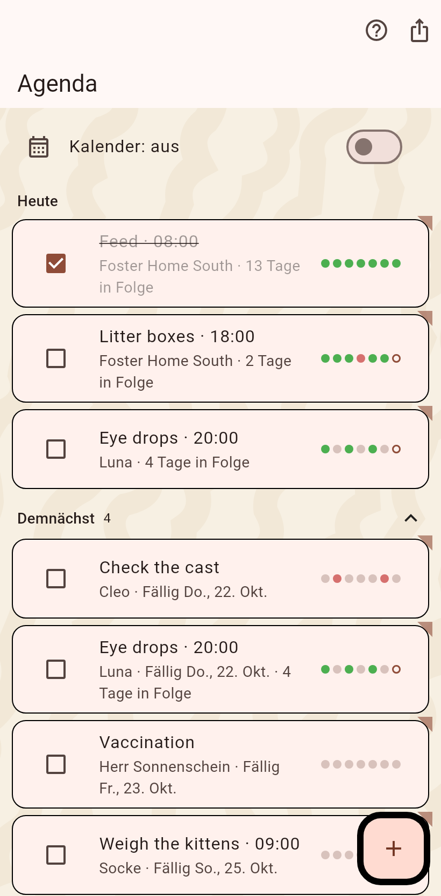

Die geplante Arbeit nach Datum: Aufgaben, die wiederkommen, Termine mit Uhrzeit, Erinnerungen, die für einen Tag gelten. Verpasste bleiben oben stehen.

Die wiederkehrenden Pflichten: Füttern, Katzenklo, Medizin. Täglich, alle so viele Tage, an Wochentagen, oder einmalig mit Fälligkeit. Sie stehen unter Heute mit Kästchen, Serie und den letzten sieben Tagen als Punkten; Demnächst zeigt die nächste Woche ohne die täglichen. Das Kästchen hakt eine Aufgabe ab und antwortet mit der Pfote. Eine Aufgabe kann zur gewählten Uhrzeit per Benachrichtigung erinnern; eine Aufgabe lässt sich auf eine andere Katze duplizieren.
Ein Termin hat Datum und Uhrzeit, eine Erinnerung gilt für einen Tag. Das Kästchen schließt einen ab: ein Wert kann in ein Feld geschrieben werden, und die Karte bleibt abgehakt bis zum Abend stehen; ein Tipp darauf plant den nächsten. Ein langer Druck ändert das Datum, der Papierkorb löscht.
Ein Termin mit mehreren Katzen: hake sie darin an, die Agenda zeigt eine Karte mit ihren Namen, und beim Abschließen wird gefragt, welche Katzen behandelt wurden. Die nicht behandelten bleiben geplant.
Der Schalter oben spiegelt die Termine in einen Kalender des Telefons; die Leiste exportiert sie als Kalenderdatei. Der Pokal öffnet die Erfolge.